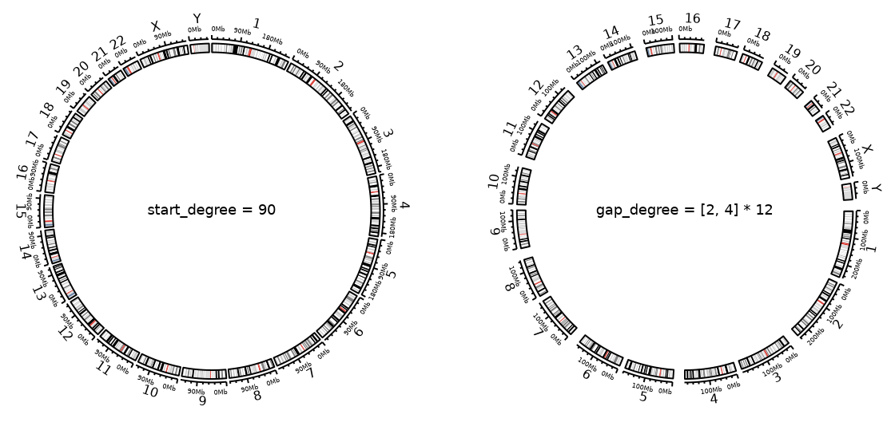
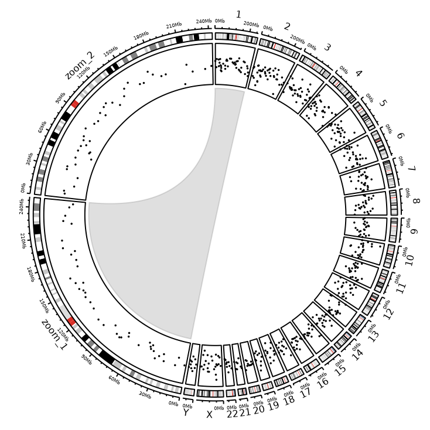
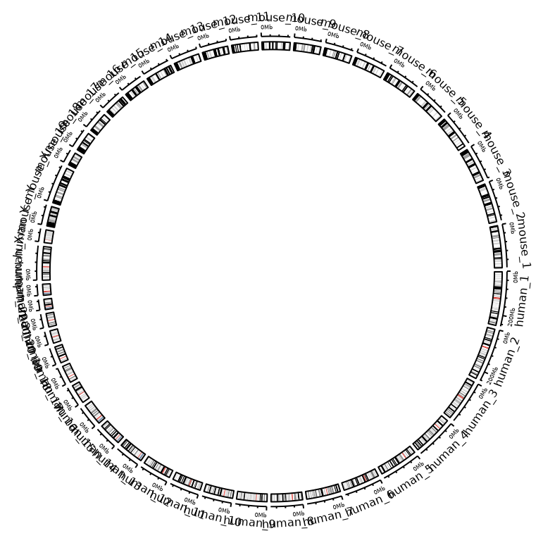

9 Initialize with genomic data#
circlize-py is flexible enough to initialize a circular layout not only by chromosomes, but also by any type of general genomic category.
9.1 Initialize with cytoband data#
Cytoband data is an ideal source for initializing genomic plots. It records the length of each chromosome together with cytogenetic band annotations used to locate genomic regions visually.
9.1.1 Basic usage#
When working with the human genome, the most straightforward entry
point is circos.initializeWithIdeogram() (Figure 9.1). By
default, this function initializes the layout using human
hg19 cytoband coordinates and adds two tracks: an outer
track with chromosome names and genomic coordinate axes, and an inner
track showing chromosome ideograms.
Although the outer labels omit the "chr" prefix by
default (set draw_chr_prefix=True to keep it), the internal
sector names still carry "chr" (e.g., "chr1",
"chr2"). When adding subsequent tracks or links, always use
"chr"-prefixed chromosome names.
import matplotlib.pyplot as plt
from circlize_py import circos
fig = plt.figure(figsize=(6.5, 6.5))
ax = fig.add_subplot(111)
circos.initializeWithIdeogram(ax=ax)
ax.text(0.0, 0.0, "default", ha="center", va="center", fontsize=11)
circos.info()
circos.clear()All your sectors:
['chr1', 'chr2', 'chr3', 'chr4', 'chr5', 'chr6', 'chr7', 'chr8', 'chr9', 'chr10', 'chr11', 'chr12', 'chr13', 'chr14', 'chr15', 'chr16', 'chr17', 'chr18', 'chr19', 'chr20', 'chr21', 'chr22', 'chrX', 'chrY']
All your tracks:
[1, 2]
Your current sector.index is chrY
Your current track.index is 2
By default, circos.initializeWithIdeogram() uses bundled
hg19 cytoband data. You can initialize layouts for other
model organism assemblies via the species argument.
circlize-py bundles 27 cytoband assemblies (including
hg18, hg19, hg38,
mm10, dm3, and rn4) and 86
chromInfo assemblies for offline use:
circos.initializeWithIdeogram(species="hg18")
circos.initializeWithIdeogram(species="mm10")If a species has no cytoband table in the bundled dataset,
circos.initializeWithIdeogram() falls back to its
chromInfo table, which provides chromosome lengths without
band staining (so no ideogram track is drawn).
You can also load custom cytoband data from a local file path or pass
a pandas.DataFrame directly to
circos.initializeWithIdeogram():
import pandas as pd
from circlize_py import circos, system_file
cytoband_file = system_file("extdata", "cytoBand.txt", package="circlize")
circos.initializeWithIdeogram(cytoband_file)
circos.clear()
cytoband_df = pd.read_csv(
cytoband_file,
sep="\t",
header=None,
dtype={0: str, 1: "int64", 2: "int64", 3: str, 4: str},
)
circos.initializeWithIdeogram(cytoband_df)
circos.clear()Note that pandas.read_csv() parses coordinate columns
into 64-bit integers by default, avoiding the 32-bit integer overflow
issues that can arise in R when summing chromosome lengths.
By default, circos.initializeWithIdeogram() includes all
canonical chromosomes in the cytoband table. You can select and reorder
a subset of chromosomes via chromosome_index (Figure
9.2):
fig = plt.figure(figsize=(6.5, 6.5))
ax = fig.add_subplot(111)
circos.initializeWithIdeogram(
chromosome_index=[f"chr{c}" for c in (3, 5, 2, 8)],
ax=ax,
)
ax.text(0.0, 0.0, "subset of chromosomes", ha="center", va="center", fontsize=10)
circos.clear()
When using chromInfo for assemblies with many unplaced
scaffolds or short contigs, chromosome_index is also
convenient for filtering out unwanted contigs.
9.1.2 Pre-defined tracks#
After initializing the sectors,
circos.initializeWithIdeogram() creates an axis/labels
track and an ideogram track (when cytoband data is available). The
plot_type argument controls which pre-defined elements are
drawn (Figure 9.3):
fig = plt.figure(figsize=(10.0, 5.0))
ax1 = fig.add_subplot(1, 2, 1)
circos.initializeWithIdeogram(plot_type=("axis", "labels"), ax=ax1)
ax1.text(0.0, 0.0, "plot_type = ('axis', 'labels')", ha="center", va="center", fontsize=9.5)
circos.clear()
ax2 = fig.add_subplot(1, 2, 2)
circos.initializeWithIdeogram(plot_type=None, ax=ax2)
ax2.text(0.0, 0.0, "plot_type = None", ha="center", va="center", fontsize=9.5)
circos.clear()
9.1.3 Other general settings#
Just like general circular plots, layout geometry can be configured
beforehand with circos.par() (Figure 9.4). Remember to call
circos.clear() after finishing each plot so parameters
reset cleanly.
fig = plt.figure(figsize=(10.0, 5.0))
ax1 = fig.add_subplot(1, 2, 1)
circos.par(start_degree=90)
circos.initializeWithIdeogram(ax=ax1)
circos.clear()
ax1.text(0.0, 0.0, "start_degree = 90", ha="center", va="center", fontsize=9.5)
ax2 = fig.add_subplot(1, 2, 2)
circos.par(gap_degree=[2, 4] * 12)
circos.initializeWithIdeogram(ax=ax2)
circos.clear()
ax2.text(0.0, 0.0, "gap_degree = [2, 4] * 12", ha="center", va="center", fontsize=9.5)
9.2 Customize chromosome track#
Setting plot_type=None initializes the circular genomic
layout without adding any default tracks, giving you complete control
over the chromosome header track. In the example below, each chromosome
is drawn as a randomly colored rectangle with centered white labels
(Figure 9.5):
import numpy as np
from circlize_py import CELL_META, circos, rand_color
np.random.seed(123)
circos.initializeWithIdeogram(plot_type=None)
def panel_chr(x, y):
chr_name = CELL_META.sector_index
xlim = CELL_META.xlim
ylim = CELL_META.ylim
circos.rect(xlim[0], 0.0, xlim[1], 1.0, col=rand_color(1)[0])
circos.text(
float(np.mean(xlim)),
float(np.mean(ylim)),
chr_name,
cex=0.7,
col="white",
facing="inside",
niceFacing=True,
)
circos.track(ylim=(0.0, 1.0), panel_fun=panel_chr, track_height=0.15, bg_border=None)
circos.clear()
9.3 Initialize with general genomic category#
Chromosomes are simply a special case of genomic categories.
circos.genomicInitialize() initializes a circular layout
from any BED-like DataFrame containing at least three
columns (category, start, end).
In fact, circos.initializeWithIdeogram() is built directly
on top of circos.genomicInitialize(). The coordinate span
for each category is inferred as the minimum start and
maximum end across all rows belonging to that category.
In the example below, a circular plot is initialized for three genes:
import pandas as pd
df = pd.DataFrame({
"name": ["TP53", "TP63", "TP73"],
"start": [7565097, 189349205, 3569084],
"end": [7590856, 189615068, 3652765],
})
circos.genomicInitialize(df)Each category does not need to be represented by a single row. Using
the bundled "tp_family_df" dataset (exon coordinates for
alternative transcripts of TP53, TP63, and
TP73), we can visualize multi-row gene models in a circular
layout (Figure 9.6):
from circlize_py import load_extdata
tp_family = load_extdata("tp_family_df")
print(tp_family.head()) gene start end transcript exon
0 TP53 7565097 7565332 ENST00000413465.2 7
1 TP53 7577499 7577608 ENST00000413465.2 6
2 TP53 7578177 7578289 ENST00000413465.2 5
3 TP53 7578371 7578554 ENST00000413465.2 4
4 TP53 7579312 7579590 ENST00000413465.2 3First, we initialize the layout and add a thin colored track identifying the three genes:
circos.genomicInitialize(tp_family)
circos.track(
ylim=(0.0, 1.0),
bg_col=["#FF000040", "#00FF0040", "#0000FF40"],
bg_border=None,
track_height=0.05,
)Next, we stack each transcript’s intron span
(circos.lines()) and exons
(circos.genomicRect()) in a genomic track. The usage of
circos.genomicTrack() and circos.genomicRect()
is covered in detail in Create
plotting regions for genomic data.
n = int(tp_family.groupby("gene")["transcript"].nunique().max())
def panel_tx(region, value, **kwargs):
all_tx = list(dict.fromkeys(value["transcript"].tolist()))
for i, tx in enumerate(all_tx, start=1):
mask = (value["transcript"] == tx).to_numpy()
sub = region.iloc[mask]
current_tx_start = float(sub.iloc[:, 0].min())
current_tx_end = float(sub.iloc[:, 1].max())
y_pos = n - i + 1
circos.lines([current_tx_start, current_tx_end], [y_pos, y_pos], col="#CCCCCC")
circos.genomicRect(
sub,
ytop=y_pos + 0.4,
ybottom=y_pos - 0.4,
col="orange",
border=None,
)
circos.genomicTrack(
tp_family,
ylim=(0.5, n + 0.5),
panel_fun=panel_tx,
bg_border=None,
track_height=0.4,
)
circos.clear()
In Figure 9.6, notice that each axis begins at "0kb"
rather than the raw genomic coordinate. That is purely a tick-label
adjustment showing relative distance from the start of each gene, while
the internal cell coordinates remain the original genomic positions. Set
tick_labels_start_from_zero=False in
circos.genomicInitialize() to display absolute genomic
coordinates instead.
9.4 Zooming chromosomes#
The strategy for zooming selected chromosomes mirrors Zooming of sectors.
First, define a helper extend_chromosomes() that duplicates
rows belonging to the chosen chromosomes and prepends
"zoom_" to their names:
def extend_chromosomes(bed, chromosome, prefix="zoom_"):
zoom_bed = bed[bed.iloc[:, 0].isin(chromosome)].copy()
zoom_bed.iloc[:, 0] = prefix + zoom_bed.iloc[:, 0].astype(str)
return pd.concat([bed, zoom_bed], ignore_index=True)We read cytoband metadata with read.cytoband() and
normalize sector_width separately across normal chromosomes
and zoomed chromosomes so each group occupies roughly half of the
circle:
import numpy as np
from circlize_py import circos, generateRandomBed, get, read
cytoband = read.cytoband()
cytoband_df = cytoband["df"]
chromosome = cytoband["chromosome"]
chr_len = cytoband["chr.len"]
normal_lens = np.array([chr_len[c] for c in chromosome], dtype=float)
zoom_lens = np.array([chr_len[c] for c in ("chr1", "chr2")], dtype=float)
sector_width = np.concatenate([
normal_lens / normal_lens.sum(),
zoom_lens / zoom_lens.sum(),
])Pass the extended cytoband DataFrame to
circos.initializeWithIdeogram(), add a track of random
genomic points on the extended BED table, and draw a shaded link
connecting chr1 to zoom_chr1 (Figure 9.7):
circos.par(start_degree=90)
circos.initializeWithIdeogram(
extend_chromosomes(cytoband_df, ["chr1", "chr2"]),
sector_width=sector_width,
)
bed = generateRandomBed(nr=500, seed=999)
circos.genomicTrack(
extend_chromosomes(bed, ["chr1", "chr2"]),
panel_fun=lambda region, value, **kwargs: circos.genomicPoints(
region, value, pch=16, cex=0.3, **kwargs
),
)
circos.link(
"chr1",
get.cell.meta.data("cell.xlim", sector_index="chr1"),
"zoom_chr1",
get.cell.meta.data("cell.xlim", sector_index="zoom_chr1"),
col="#00000020",
border=None,
)
circos.clear()
9.5 Concatenating two genomes#
Sometimes you want to compare two or more genomes in the same
circular plot by forming a combined genome. Below we combine human
(hg19) and mouse (mm10) genomes.
First, load both cytoband tables and add "human_" /
"mouse_" prefixes to disambiguate chromosome names:
human_cytoband = read.cytoband(species="hg19")["df"].copy()
mouse_cytoband = read.cytoband(species="mm10")["df"].copy()
human_cytoband.iloc[:, 0] = "human_" + human_cytoband.iloc[:, 0].astype(str)
mouse_cytoband.iloc[:, 0] = "mouse_" + mouse_cytoband.iloc[:, 0].astype(str)
cytoband = pd.concat([human_cytoband, mouse_cytoband], ignore_index=True)
print(cytoband.head()) V1 V2 V3 V4 V5
0 human_chr1 0.0 2300000.0 p36.33 gneg
1 human_chr1 2300000.0 5400000.0 p36.32 gpos25
2 human_chr1 5400000.0 7200000.0 p36.31 gneg
3 human_chr1 7200000.0 9200000.0 p36.23 gpos25
4 human_chr1 9200000.0 12700000.0 p36.22 gnegThe combined table is still a valid cytoband DataFrame.
By ordering mouse chromosomes in reverse in
chromosome_index, human chromosome 1 sits right next to
mouse chromosome 1 (Figure 9.8):
chromosome_index = (
[f"human_chr{c}" for c in list(range(1, 23)) + ["X", "Y"]]
+ [f"mouse_chr{c}" for c in reversed(list(range(1, 20)) + ["X", "Y"])]
)
circos.initializeWithIdeogram(cytoband, chromosome_index=chromosome_index)
circos.clear()
With 45 chromosomes in a single circle, default axes and prefixed
chromosome names overlap. To improve readability, we suppress the
default tracks (plot_type=None), create a thin outer
highlight track separating human (red) from mouse (blue) with concise
chromosome indices, add a 5-degree gap between the two species via
gap_after, and draw the ideograms explicitly with
circos.genomicIdeogram() (Figure 9.9):
import re
from circlize_py import highlight, mm_h, mm_y
circos.par(
gap_after=[1] * 23 + [5] + [1] * 20 + [5],
points_overflow_warning=False,
)
circos.initializeWithIdeogram(cytoband, plot_type=None, chromosome_index=chromosome_index)
circos.track(
ylim=(0.0, 1.0),
panel_fun=lambda x, y: circos.text(
CELL_META.xcenter,
CELL_META.ylim[1] + mm_y(2),
re.sub(r".*chr", "", CELL_META.sector_index),
cex=0.6,
niceFacing=True,
),
track_height=mm_h(1),
cell_padding=(0.0, 0.0, 0.0, 0.0),
bg_border=None,
)
highlight.chromosome(
[f"human_chr{c}" for c in list(range(1, 23)) + ["X", "Y"]],
col="red",
track_index=1,
)
highlight.chromosome(
[f"mouse_chr{c}" for c in list(range(1, 20)) + ["X", "Y"]],
col="blue",
track_index=1,
)
circos.genomicIdeogram(cytoband)
circos.clear()
You can also initialize a combined genome directly from chromosome
sizes via read.chromInfo() and
circos.genomicInitialize(). Because
circos.genomicInitialize() orders sectors by first
appearance in the first column, sort the combined chromInfo
table according to chromosome_index before calling
circos.genomicInitialize() (Figure 9.10):
human_chromInfo = read.chromInfo(species="hg19")["df"].copy()
mouse_chromInfo = read.chromInfo(species="mm10")["df"].copy()
human_chromInfo.iloc[:, 0] = "human_" + human_chromInfo.iloc[:, 0].astype(str)
mouse_chromInfo.iloc[:, 0] = "mouse_" + mouse_chromInfo.iloc[:, 0].astype(str)
chromInfo = pd.concat([human_chromInfo, mouse_chromInfo], ignore_index=True)
chromInfo["_ord"] = pd.Categorical(
chromInfo.iloc[:, 0], categories=chromosome_index, ordered=True
)
chromInfo = chromInfo.sort_values("_ord").drop(columns=["_ord"]).reset_index(drop=True)
print(chromInfo.head()) chr start end
0 human_chr1 0.0 249250621.0
1 human_chr2 0.0 243199373.0
2 human_chr3 0.0 198022430.0
3 human_chr4 0.0 191154276.0
4 human_chr5 0.0 180915260.0circos.par(
gap_after=[1] * 23 + [5] + [1] * 20 + [5],
points_overflow_warning=False,
)
circos.genomicInitialize(chromInfo, plot_type=None)
circos.track(
ylim=(0.0, 1.0),
panel_fun=lambda x, y: circos.text(
CELL_META.xcenter,
CELL_META.ylim[1] + mm_y(2),
re.sub(r".*chr", "", CELL_META.sector_index),
cex=0.6,
niceFacing=True,
),
track_height=mm_h(1),
cell_padding=(0.0, 0.0, 0.0, 0.0),
bg_border=None,
)
highlight.chromosome(
[f"human_chr{c}" for c in list(range(1, 23)) + ["X", "Y"]],
col="red",
track_index=1,
)
highlight.chromosome(
[f"mouse_chr{c}" for c in list(range(1, 20)) + ["X", "Y"]],
col="blue",
track_index=1,
)
circos.track(ylim=(0.0, 1.0))
circos.clear()
Adding data tracks and links works identically to single-genome plots as long as chromosome names share the same prefixes. Below we add an ideogram track, a track of random points, and links connecting chromosome midpoints between human and mouse chromosomes 1–19 (Figure 9.11):
fig = plt.figure(figsize=(6.8, 6.8))
ax = fig.add_subplot(111)
circos.par(
gap_after=[1] * 23 + [5] + [1] * 20 + [5],
points_overflow_warning=False,
)
circos.genomicInitialize(chromInfo, plot_type=None, ax=ax)
circos.track(
ylim=(0.0, 1.0),
panel_fun=lambda x, y: circos.text(
CELL_META.xcenter,
CELL_META.ylim[1] + mm_y(2),
re.sub(r".*chr", "", CELL_META.sector_index),
cex=0.6,
niceFacing=True,
),
track_height=mm_h(1),
cell_padding=(0.0, 0.0, 0.0, 0.0),
bg_border=None,
)
highlight.chromosome(
[f"human_chr{c}" for c in list(range(1, 23)) + ["X", "Y"]],
col="red",
track_index=1,
)
highlight.chromosome(
[f"mouse_chr{c}" for c in list(range(1, 20)) + ["X", "Y"]],
col="blue",
track_index=1,
)
circos.genomicIdeogram(cytoband)
# Track of random genomic points across both genomes
human_df = generateRandomBed(200, species="hg19", seed=201)
mouse_df = generateRandomBed(200, species="mm10", seed=202)
human_df.iloc[:, 0] = "human_" + human_df.iloc[:, 0].astype(str)
mouse_df.iloc[:, 0] = "mouse_" + mouse_df.iloc[:, 0].astype(str)
df = pd.concat([human_df, mouse_df], ignore_index=True)
np.random.seed(123)
circos.genomicTrack(
df,
panel_fun=lambda region, value, **kwargs: circos.genomicPoints(
region, value, col=rand_color(1)[0], cex=0.5, **kwargs
),
)
# Links connecting midpoints of human and mouse chromosomes 1..19
human_mid = pd.DataFrame({
"chr": [f"human_chr{i}" for i in range(1, 20)],
"mid": np.round(
(human_chromInfo.iloc[:19, 1].to_numpy() + human_chromInfo.iloc[:19, 2].to_numpy()) / 2.0
),
})
mouse_mid = pd.DataFrame({
"chr": [f"mouse_chr{i}" for i in range(1, 20)],
"mid": np.round(
(mouse_chromInfo.iloc[:19, 1].to_numpy() + mouse_chromInfo.iloc[:19, 2].to_numpy()) / 2.0
),
})
circos.genomicLink(human_mid, mouse_mid, col=rand_color(19, seed=303))
circos.clear()
ax.text(-0.9, -0.8, "Human\ngenome", ha="center", va="center", fontsize=10, clip_on=False)
ax.text(0.9, 0.8, "Mouse\ngenome", ha="center", va="center", fontsize=10, clip_on=False)